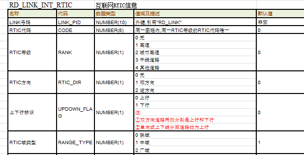
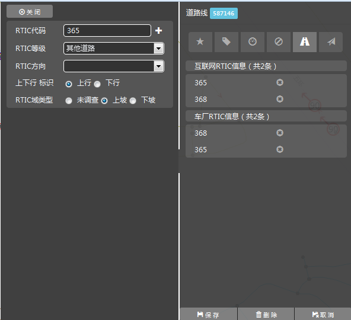

基本展示






操作说明：
1、 选中LINK
2、 左键点击“实时交通”卡片标签
3、 属性栏展示当前对象实时交通卡片信息;
取消动作：
1、 点击Link属性其他卡片；
2、点中其他Link/点/icon/面时，切换至其他要素的属性栏
业务说明：
1、点击确认方向之后，程序识别对象link更改状态，如果当前对象无互联网RTIC信息，自动增加一条信息：如果当前对象存在互联网RTIC信息，根据方向关系判断是否需要新增互联网RTIC；原则如下：
①如选定的方向关系与LINK当前互联网RTIC信息的方向关系一致，则是要修改当前互联网RTIC信息，在属性栏中该条信息对应高亮（或者其他RTIC变为不可编辑）；
②如果选定的方向关系与LINK当前互联网RTIC信息的方向关系相反，则新增一条互联网RTIC信息
2、新增卡片各字段按照模型默认值进行赋值（rtic方向除外），单方向linkRTIC信息的上下行字段自动维护为“上行”；如果所选Link为“高速道路”或者“城市高速”，则程序自动为RTIC等级赋相应的取值
3、选中link顺方向箭头的展示：若选中Link为双方向，图面上在选中link起点到终点画线方向的左侧展示选中link的顺方向箭头。若选中link为单方向，则显示与该link道路方向指向相同的方向箭头（箭头位置放在选中link起点到终点方向的左侧；选中多根link，图面上按照第一根link的顺方向箭头进行展示
4、专题场景显示说明如下：
①、程序在道路基本信息卡片基础上，根据互联网RTIC信息将“RTIC等级+RTIC代码+上下行标识”对应的信息进行标注。例如：C22上：“C”是等级，“22”是RTIC号码，“上”是上下行标识；
②、程序将“RTIC方向”使用箭头在link上进行标注；
互联网RTIC图面编辑
操作说明（INTrtic场景下）：
1、点击互联网RTIC专题场景时，map界面自动替换至互联网RTIC显示场景：
2、选择一根或一串link，属性栏展示对应link实时交通信息（高亮对应内容）；
3、map界面提示"请指定方向"
4、map界面在选中LINK或LINK串居中位置用高亮红色箭头“→”显示作用方向，提示选择作业方向；
5、在图面上点击左键改变方向（点击第一次改变为逆方向；重复点击循环以上顺序更改方向）
6、空格确认
取消动作：
1、按"Esc"键可取消操作；
2、再次点击互联网RTIC专题场景按钮，退出专题
3、点击其他工具按钮，切换至对应场景


RTIC等级
操作说明：
1、 点击编辑区域时，弹出可选择列表；
2、 下拉列表中高亮当前鼠标位置的条目；
3、 左键点击需修改成的某一条内容
4、 更改当前属性栏的值
编辑的取消：
1、 点击属性栏或map其他位置
2、 按键盘的“Esc”键，退出当前属性的编辑

实时控制：
1、所选link种别不是“高速道路”，RTIC等级不能为“高速”
2、RTIC等级不能为0：无
0 无
1 高速
2 城市高速
3 干线道路
4 其他道路
高速
上下行标识
操作说明：
1、 左键点中“选择按钮”时即代表更改；
RTIC域类型
操作说明：
1、 左键点中“选择按钮”时即代表更改；
实时控制：
1、 所有的单向道路，都是上行
2、 双向道路上，一侧为上行，另一侧为下行
实时控制：
1、无
互联网RTIC删除
操作说明：
1、 点击删除按钮，删除当前RDLink上的RTIC信息
业务说明：
1、点击“实时交通”卡片之后，图面展示所有link的INTrtic信息，包括“RTIC等级+RTIC代码+上下行标识”对应的信息进行标注；如果是单方向link，根据通行方向绘制蓝色箭头指示，箭头位置在退出link的端点；如右图
2、点击属性中的RTIC模块或者TMC模块，图面展示link对应的RTIC或TMC信息